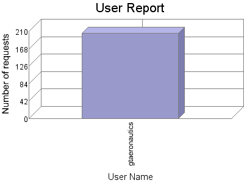

Analog 5.24
Analog 5.24 Report Magic for Analog 2.13
Report Magic for Analog 2.13The User Report identifies any user that has successfully logged into a secure area within the site. The majority of the accesses to a web page are anonymous, so they will not appear in this report.
This report shows the first 50 results by number of requests. This report is sorted by number of requests.

| User Name | Number of requests | Percentage of the bytes | |
|---|---|---|---|
| 1. | gtaeronautics | 206 | 100% |
This report was generated on September 16, 2007 03:37.
Report time frame May 28, 2004 21:56 to November 30, 2006 19:53.
| Web statistics report produced by: | |
| Analog 5.24 | Report Magic for Analog 2.13 |